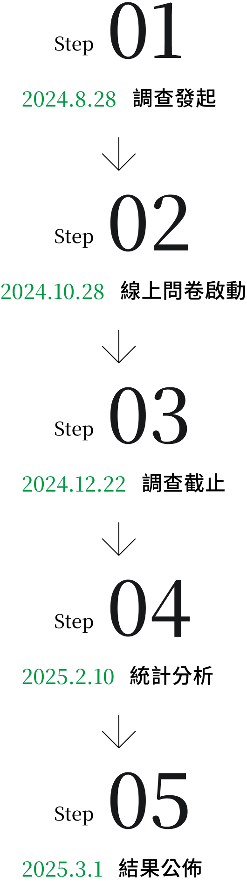
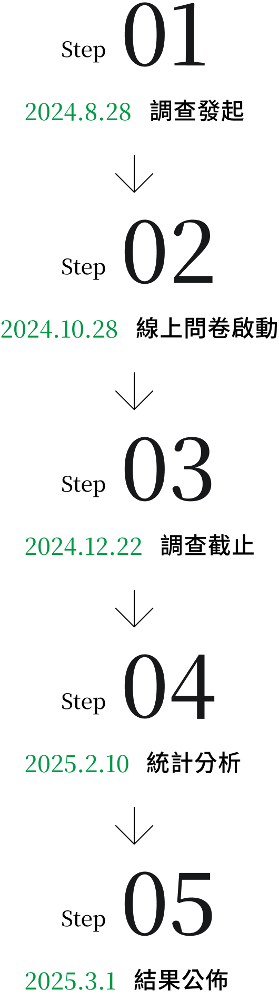

ＳＵＲＶＲＹ
信賴品牌調查
緣起
- 企劃執行單位
- 康健雜誌整合傳播部
- 調查執行單位
- 天下雜誌調查中心
- 調查時間
- 2025年11月03日至2025年12月21日
- 調查方式
- 數位問卷調查
- 發送對象
- 康健雜誌訂戶、會員，以及一般消費者
- 有效問卷
- 3,125份
信賴，是經過長時間的相處後，雙方產生一種彼此信任與依賴的關係
品牌信任感更是企業健康形象以及品牌內涵的投射，讓消費者可以放心地與親友分享、更安心的使用與採購，康健信賴品牌大調查相信，唯有來自重要消費者的真實聲音，才能共同為台灣選擇出值得信賴的好品牌！
本次調查以康健雜誌讀者群，以及一般消費者為對象，進行信賴品牌的問卷調查，公佈品項共五大類，結果顯示約有68.4%的康健讀者與民眾表示在購買商品時，「是否有獲得康健雜誌讀者票選信賴品牌」對購買決策具有影響力。反映康健讀者與民眾除了具備高度健康意識外，也會以消費行動來選擇品質優良與信賴度高的商品或服務，值得企業主參考，作為品牌發展的未來走向。
誠信當道！
安全、真實、負責
消費者心中「值得信賴的品牌」，除了品質經過認證、過去的使用經驗之外，售後服務也代表廠商對於自家商品負責任的態度，為品牌信賴度的重要特點。透過民生食品、飲料類等各項目排行調查中觀察，秉持品牌初衷及核心理念、堅持提供值得信賴的品質及產品，讓新鮮看得到、吃得到、用得到。例如：連鎖速食店，推廣使用在地食材與契作農場，並將食材控管導入生產履歷，受到民眾的青睞。證明只要真材實料、安心健康，有91%的讀者是願意多花一點錢購買形象佳的商品，用消費行動支持好產品。
健康新主張
用消費共創健康價值
回想這幾年，在你心中的信任排行榜是否也悄悄有了變化？
無論如何，追求健康的信念無庸置疑，面對競爭激烈的市場，除了能夠正確回應消費者需求，更重要的是讓人與環境共好，才能成為康健雜誌讀者認同的品牌，與消費者共創價值，讓改變發生。
評選流程
 

Step01 2025.9.1 調查發起
Step02 2025.11.3 線上問卷啟動
Step03 2025.12.21 調查截止
Step04 2026.1.12 統計分析
Step05 2026.3.1 結果公佈
回函樣本輪廓
總回收數3,501份 有效問卷3,125份
性別
- 婚姻狀態：
- 68.2%己婚，有65.2%的人有小孩。
- 職業：
- 一般職員佔比 46.4%；專業人士中 66.7% 是醫療專業相關從業人員與教師，是一群重視健康的消費者。
- 行業別：
- 以醫療保健、教育學校、服務業、傳統製造業、家管／退休為大宗。
01 購買商品時，「是否有獲得康健雜誌讀者票選信賴品牌」對您的購買決策重不重要？
77.8%↑讀者認為重要/非常重要
02 請問您心中「值得信賴的品牌」應有哪些特點？(複選)
- A.品質經過認證
- B.過去使用經驗佳
- C.是否獲得康健雜誌讀者票選信賴品牌
- D.專業人士推薦
- E.符合ESG環境永續
- F.明確的品牌精神與願景
- G.受親友推薦
- H.售後服務佳
- I.其他
03 該品牌是否具有相關認證(如：環保標章、CAS、健康食品認證…)，對您的購買決策重不重要？
94.1%↑讀者購物決策依賴認證標章
04 隨著健康意識上漲，您購買商品的準則及偏好是否有改變？
健康意識，讓69.8%↑讀者在商品的選擇與購買方式發生改變
05 忙碌時，通常如何解決三餐問題？
54.2%↑讀者忙碌時會以外食為主(速食/外賣/輕食)
06 是否覺得自己的飲食習慣存在「營養不均衡」的情況？
82%↑讀者覺得自己有營養不均的情況
07 如果覺得自己有營養不良的情況，通常會如何應對？(複選)
- A.偶爾加減吃些機能性/功能性食品來補充
- B.認真開始補充維生素或保健食品
- C.改變飲食習慣，增加蔬果和健康天然食品的攝取
- D.尋求專業營養師或醫生的建議
- E.不特別處理，等身體自行調整
- F.其他
08 是否會考慮購買有「機能性/功能性」的產品？
89%↑讀者願意購買/嘗試
09 承上題，選擇不確定或不願意購買的原因是什麼？(複選)
- A.無法確定這類產品是否真的有效
- B.沒有看到足夠的科學證據支持
- C.不清楚這類產品與普通食品的區別
- D.認為這類產品價格過高
- E.偏好從日常飲食中獲取營養
- F.擔心產品中的化學添加劑或人工成分
- G.其他
10 哪類「機能性/功能性食品」最能吸引您的興趣？
- 1.提高免疫力的食品，如：維他命飲料
- 2.改善腸胃功能的食品，如：高纖麥片、乳酸菌飲料
- 3.促進心血管健康的食品，如：高可可多酚的巧克力
- 4.有助於美容或抗老化的食品，如：膠原飲
- 5.幫助控制體重的食品，如：低卡零食、高蛋白能量棒
- 6.促進睡眠質量的食品，如：添加芝麻素助眠的奶粉
- 7.其他
願意購買的讀者裡，29.7%↑對能改善腸胃功能的食品感到興趣，其次為19.3%能提高免疫力的食品
11 您每月願意花費多少在「機能性/功能性食品」上？
45.1%↑讀者願意每個月花費3,000元以下在「機能性/功能性食品」上
12 您是否會購買保健食品來維持健康？
84.1%↑讀者會購買保健食品
13 您會購買什麼類型的保健品來保養自己的健康？(複選)
- A.增強免疫力
- B.腸胃保健
- C.體重管理(減肥瘦身)
- D.補充體力
- E.養顏美容
- F.眼睛保健
- G.骨骼關節保健
- H.安穩睡眠
14 您都購買什麼樣的保健食品？(複選)
- A.維他命B
- B.維他命C
- C.維他命D
- D.維他命E
- E.鐵
- F.鎂
- G.鋅
- H.鈣
- I.綜合維他命
- J.葉黃素
- K.魚油
- L.益生菌
- J.膠原蛋白
- 其他
15 您每月會願意投資多少費用在保健營養品上？
51.3%↑讀者願意每個月花費3,000元以下在保健營養品上
16 您通常會在哪些地方購買保健營養品？(複選)
- A.網購平台
- B.量販店/超市
- C.便利商店
- D.藥局或藥妝店
- E.專業健康食品店
- F.診所或醫院
- G.其他